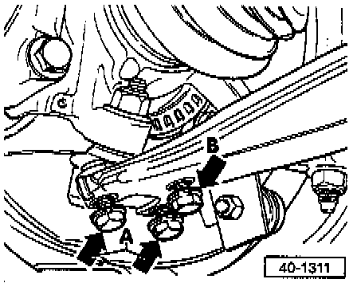
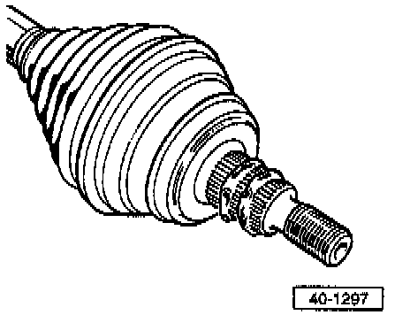

With Bonded Drive Axle
REMOVAL1. Loosen 12 point hub nut while vehicle is on ground.
2. Raise vehicle and remove wheel.
3. Remove 12 point hub nut.
4. Disconnect axle shaft from transmission drive flange.
5. Mark installed position of ball joint on control arm.

6. Remove outer bolts (arrows -A-), and loosen inner bolt (arrow -B-) and separate ball joint from control arm.

7. Install tool as shown and press axle shaft out of wheel hub.
CAUTION: Ensure adequate space necessary to press axle shaft out.
INSTALLATION
1. Remove residues of paint, grease and oil from splines of outer constant velocity joint.

2. Apply sealant, Part No. D 185 400 A2, or equivalent, to splines of outer constant velocity joint in bead approx. 3 mm (1/8 inch) thick.
3. Install axle shaft in position.
4. Connect ball joint to control arm at location marked.
5. Connect axle shaft to transmission drive flange.

6. Install 12-point nut and tighten while vehicle is on the ground.
- Use wrench tool No. VAG 1756, or equivalent, if available
7. Tighten axle shaft to transmission flange to: 45 Nm (33 ft. lbs.)
8. Tighten axle shaft to wheel bearing housing to: 90 Nm (66 ft. lbs.) plus additional 1/8 turn (45°)
9. Tighten ball joint to control arm to: 35 Nm (26 ft. lbs.)